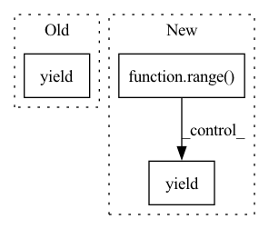

Pattern ID :41923
Before Change
def __iter__(self) -> Iterator[T_co]:
for encoding in self.encodings.data:
yield {"input_ids": encoding["input_ids"], "attention_mask": encoding["attention_mask"]}
After Change
def __iter__(self) -> Iterator[T_co]:
for i in range( self.dataset_size) :
yield {
"input_ids": self.encodings.data["input_ids"][i],
"attention_mask": self.encodings.data["attention_mask"][i],
"token_type_ids": self.encodings.data["token_type_ids"][i],In pattern: SUPERPATTERN
Frequency: 3
Non-data size: 3
Instances Fragment ID: 117473580
Project Name: astrazeneca/kazu
Commit Name: 0b73565dca7d1d9d2c04d1cb1e3792ec2a810f44
Time: 2021-11-16
Author: richard.jackson4@astrazeneca.com
File Name: azner/data/pytorch.py
M Class Name: HFDataset
N Class Name: HFDataset
M Method Name: __iter__(1)
N Method Name: __iter__(1)
M Parent Class: IterableDataset
N Parent Class: IterableDataset
M File Name: azner/data/pytorch.py
N File Name: azner/data/pytorch.py
M Start Line: 19
M End Line: 20
N Start Line: 21
N End Line: 26
Before Change
indices = []
for cls in selected_classes:
indices.append(np.random.choice(self.indices_by_class[cls], self.n_shot + self.n_query_shot))
yield np.concatenate(indices)
After Change
support, query = self.episode_sampler[i]
indices = support if self.support else query
indices = indices.flatten()
for j in range( self.n_epochs) :
yield indices
Fragment ID: 117473581
Project Name: sungnyun/understanding-cdfsl
Commit Name: 7c2f33c79ca3f624deb56622f2f68415167483fe
Time: 2021-12-27
Author: itsnamgyu@gmail.com
File Name: datasets/sampler.py
M Class Name: EpisodicBatchSampler
N Class Name: EpisodicBatchSampler
M Method Name: __iter__(1)
N Method Name: __iter__(1)
M Parent Class: Sampler
N Parent Class: object
M File Name: datasets/sampler.py
N File Name: datasets/sampler.py
M Start Line: 25
M End Line: 29
N Start Line: 80
N End Line: 85
Before Change
for event in events:
event_data = event.as_dict()
if event_data["event"] in ["user", "bot"]:
yield {"event": event_data["event"], "text": event_data["text"]}
def fetch_chat_users(self):
return self.tracker.keys()After Change
def fetch_chat_history(self, sender):
events = self.tracker.retrieve(sender).as_dialogue().events
bot_utterance = None
for i in range( events.__len__()) :
event = events[i]
event_data = event.as_dict()
if event_data["event"] in ["user", "bot"]:
result = {"event": event_data["event"], "text": event_data["text"], "timestamp" : event_data["timestamp"]}
if event_data["event"] == "user":
parse_data = event_data["parse_data"]
result["intent"] = parse_data["intent"] ["name"]
result["confidence"] = parse_data["intent"]["confidence"]
elif event_data["event"] == "bot":
if bot_utterance:
result["response"] = bot_utterance
yield result
else:
bot_utterance = event_data["name"] if event_data["event"] == "action" else None
Fragment ID: 117473583
Project Name: digiteinfotech/kairon
Commit Name: 989833fbc33ac7a88f0ec59ea801d8ddae05d261
Time: 2020-03-23
Author: fshaikh@digite.com
File Name: bot_trainer/history.py
M Class Name: ChatHistory
N Class Name: ChatHistory
M Method Name: fetch_chat_history(2)
N Method Name: fetch_chat_history(2)
M Parent Class:
N Parent Class:
M File Name: bot_trainer/history.py
N File Name: bot_trainer/history.py
M Start Line: 9
M End Line: 15
N Start Line: 9
N End Line: 27